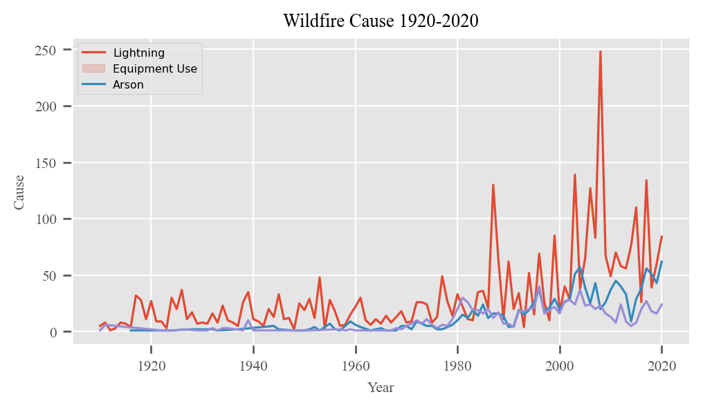
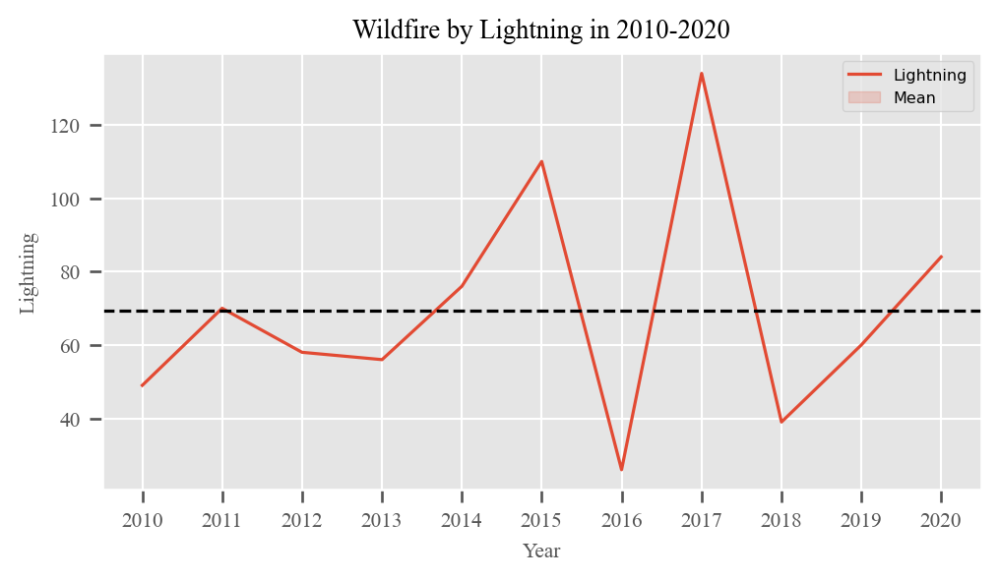
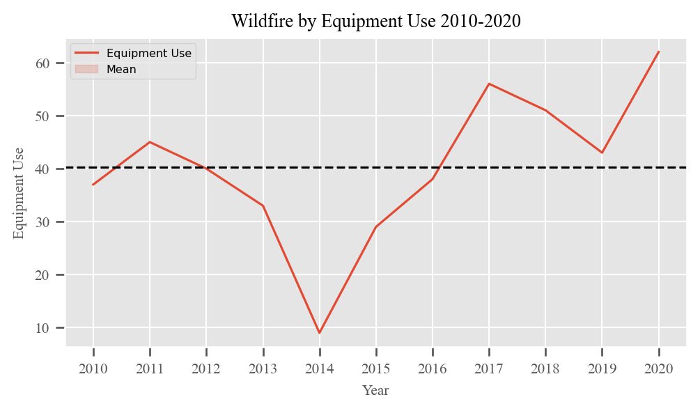
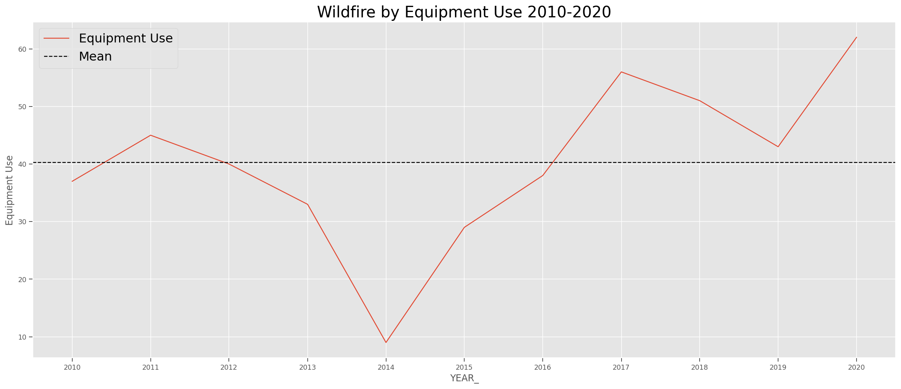
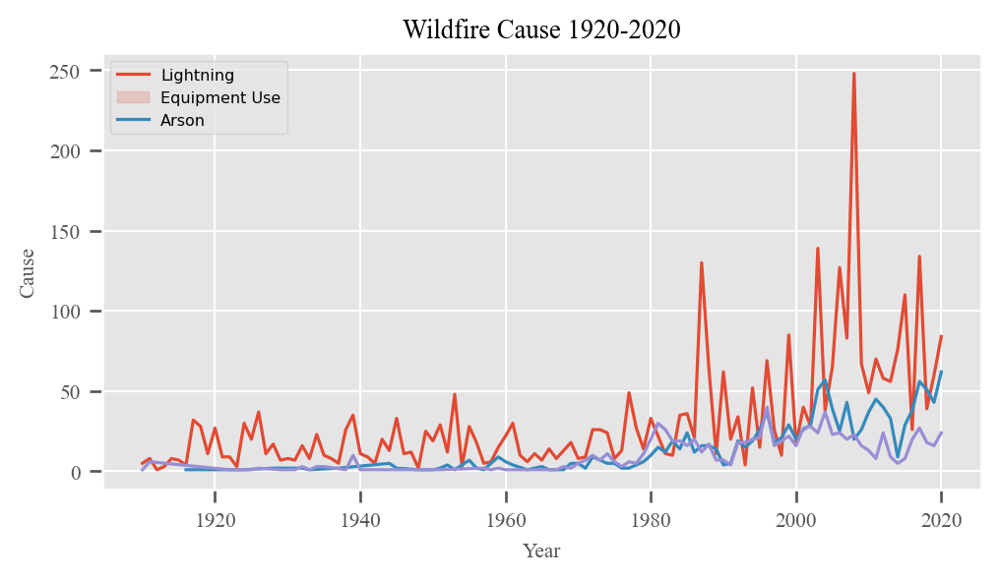
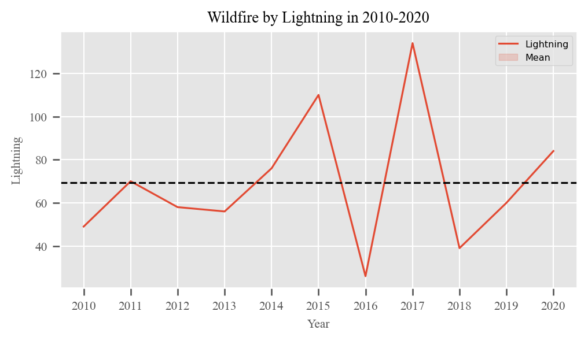
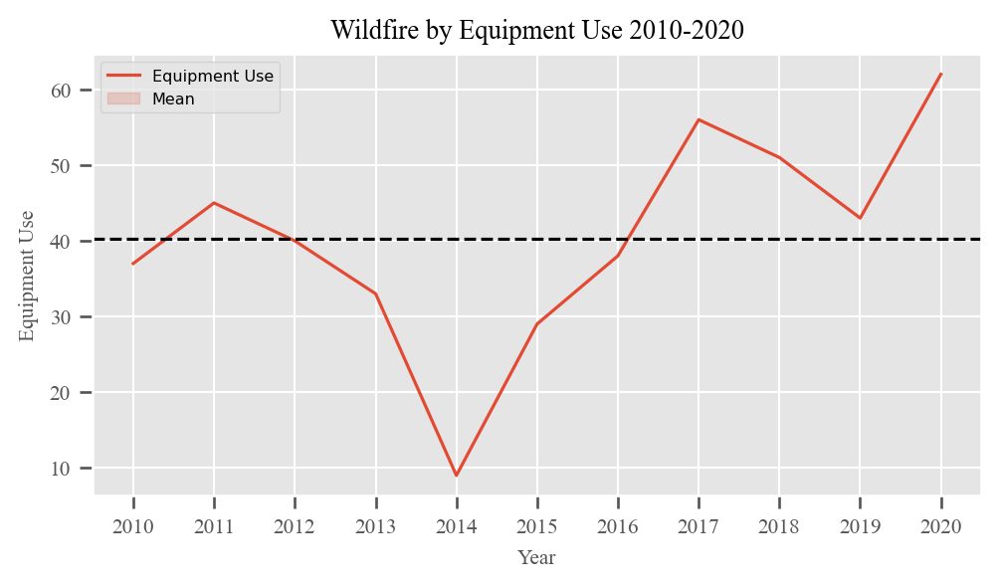
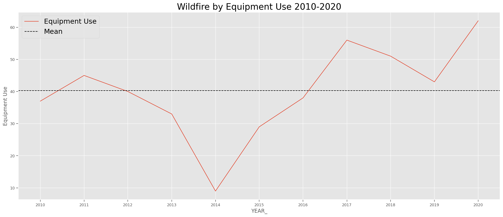

1. Wildfires Cause (1920-2020)

2. Wildfires Cause by Lightning (2010-2020)

3. Wildfires Cause by Equipment Use (2010-2020)

4. Wildfires Cause by Arson (2010-2020)

5. Source
Website : https://frap.fire.ca.gov/




Website : https://frap.fire.ca.gov/